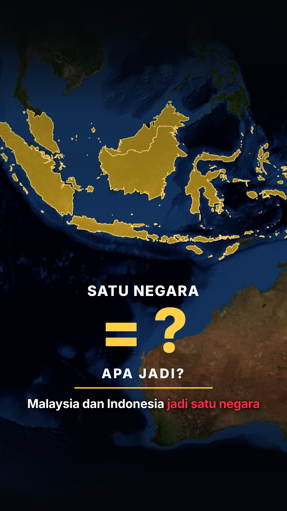
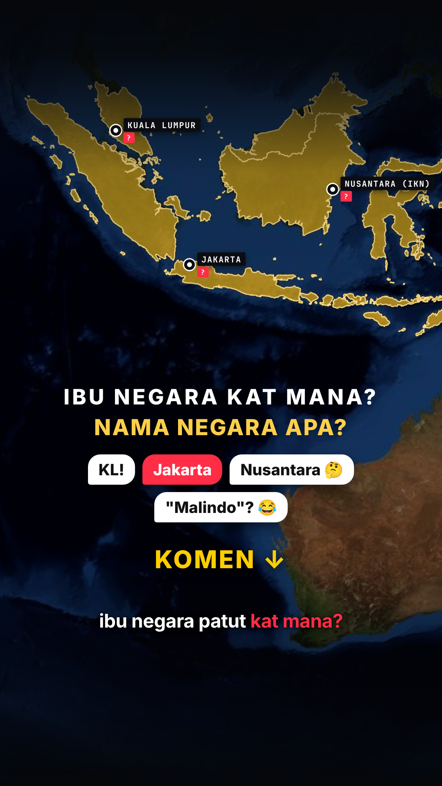

01 · 0:00
Hook
"Bayangkan… Malaysia dan Indonesia jadi satu negara."
Malaysia (biru) & Indonesia (merah) menyala, garis sempadan putih berkelip. Tajuk WHAT IF? slam.

02 · 0:03
Bercantum
"Apa jadi?"
Sempadan pudar, dua warna cair bercantum jadi emas dari tengah. "SATU NEGARA = ?"

03 · 0:05
Penduduk
"324 juta… keempat paling ramai, 17 juta di belakang Amerika."
Kad 324.5 JUTA count-up, bar banding AS / GABUNGAN / Pakistan, "#4 DUNIA".

04 · 0:12
Keluasan
"2.2 juta km², nombor 12, lebih besar dari Arab Saudi."
Bentuk gabungan diangkat & diletak atas Eropah (saiz sebenar): Sepanyol sampai Laut Kaspia.

05 · 0:19
Ekonomi
"Lebih 2 trilion dolar, 16 terbesar, hampir Sepanyol."
Kad $2.03 TRILION, senarai ranking 14–17 dengan baris gabungan menyala di #16.

06 · 0:26
Bahasa
"Semua orang boleh faham bahasa yang sama."
Gelembung "Apa khabar? 🇲🇾" dan "Apa kabar? 🇮🇩" bertemu di tengah.

07 · 0:30
1963
"Maphilindo: Tanah Melayu, Filipina, Indonesia. Tak pernah jadi."
Peta 1963: Semenanjung sahaja (Sabah/Sarawak belum masuk) + Filipina + Indonesia menyala hijau. Cop TAK PERNAH JADI.

08 · 0:38
Komen!
"Ibu negara kat mana? Nama negara apa? Komen kat bawah."
Pin KL / Jakarta / Nusantara (IKN) dengan "?", gelembung komen, KOMEN ↓, outro.